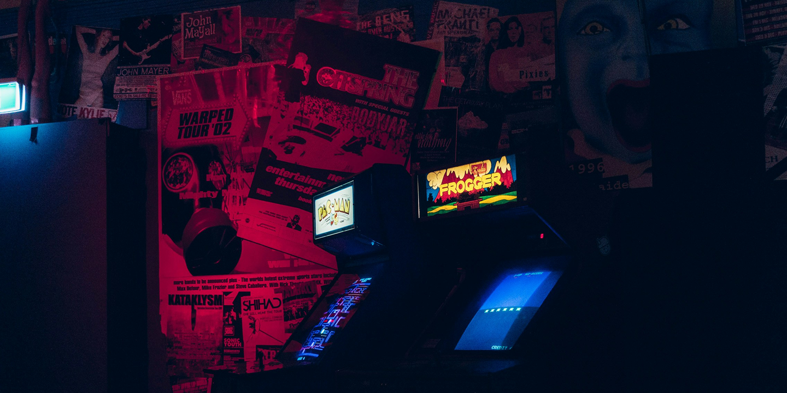

ECHOES OF GAMES THAT NEVER WERE
Questo spazio è dedicato ai giochi perduti: progetti cancellati, versioni mai pubblicate e idee rimaste allo stadio di prototipo. VAPORWARE raccoglie e racconta queste storie attraverso immagini, modelli e frammenti di sviluppo, trasformando ciò che è stato dimenticato in memoria condivisa.